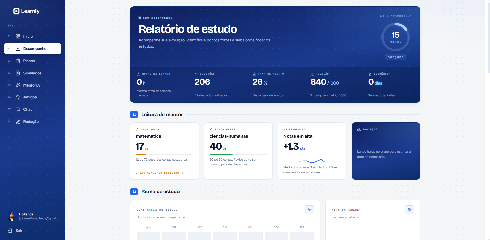

Programação
Interesse em escrever código, exercitar o raciocínio lógico e encontrar maneiras de resolver problemas com software.
Estudante de Ciência da Computação · UNIFAL-MG
João Victor Martins Hollanda de Oliveira
Olá! Sou João Victor, estudante de Ciência da Computação na UNIFAL-MG. Este é meu espaço para apresentar meus interesses, minha trajetória acadêmica e os assuntos que me inspiram a aprender.
Tenho interesse em programação, desenvolvimento de software e tecnologia. Gosto de compreender como as soluções digitais são criadas e de explorar novas possibilidades de aprendizado.
Fora do universo da computação, também me interesso por videogames e carros. São temas que fazem parte dos meus interesses pessoais e que gosto de acompanhar.
Algumas coisas de que gosto e sobre as quais tenho vontade de aprender mais.
Interesse em escrever código, exercitar o raciocínio lógico e encontrar maneiras de resolver problemas com software.
Curiosidade pelo processo de transformar ideias em aplicações, desde o planejamento até a implementação.
Acompanho o universo da tecnologia e gosto de descobrir ferramentas, tendências e novas possibilidades digitais.
Os jogos eletrônicos estão entre meus interesses pessoais, tanto como entretenimento quanto pela tecnologia envolvida em sua criação.
Gosto do universo automotivo e de conhecer diferentes veículos, tecnologias e soluções de engenharia.
Sou estudante de Ciência da Computação na Universidade Federal de Alfenas (UNIFAL-MG). Minha formação acadêmica está ligada ao estudo da computação, da programação e dos fundamentos necessários ao desenvolvimento de sistemas.
Além dos estudos na graduação, também desenvolvo projetos pessoais para praticar programação e aprender novas tecnologias.
O Learnly é uma aplicação web desenvolvida para ajudar estudantes a organizar melhor seus estudos. O objetivo é permitir que os usuários criem planos de estudo, organizem suas disciplinas, acompanhem seu progresso e gerenciem suas atividades.
O sistema também conta com recursos de inteligência artificial, como um chatbot para auxiliar estudantes e simulados com questões no estilo ENEM.
Tecnologias utilizadas: C#, ASP.NET Core, Entity Framework Core, SQL Server, React, JavaScript e CSS.
Principais funcionalidades:
O que aprendi:
Durante o desenvolvimento do Learnly, pude colocar em prática meus conhecimentos em desenvolvimento web, criação de APIs REST, integração com banco de dados e desenvolvimento de interfaces.
Também aprendi mais sobre arquitetura em camadas, organização de código e comunicação entre frontend e backend.
Repositórios no GitHub:

Este projeto consiste em um site de portfólio pessoal, desenvolvido com o objetivo de apresentar minhas informações, habilidades e projetos de forma organizada e acessível.
A ideia foi criar uma página simples e visualmente agradável, permitindo que visitantes conheçam um pouco mais sobre mim e meu trabalho na área de tecnologia.
Tecnologias utilizadas: HTML5 e CSS3.
Principais funcionalidades:
O que aprendi:
Durante o desenvolvimento, pude aprimorar meus conhecimentos em HTML e CSS, principalmente na estruturação de páginas web, estilização de elementos e organização de conteúdo.
Também pratiquei conceitos de design de interfaces e experiência do usuário, buscando criar um site funcional e fácil de navegar.
Repositório no GitHub: Portfólio Pessoal
Instituição: Universidade Federal de Alfenas — UNIFAL-MG
Período: 2026–2030
Local: Campus II, Alfenas, Minas Gerais, Brasil.
Você pode encontrar minhas informações de contato aqui.